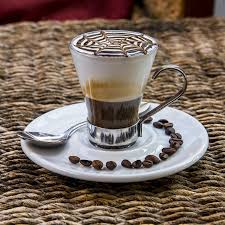

Espresso
Pure and intense coffee pleasure.
Ingredients
- Espresso beans: 10 g
- Water: 30 ml
Steps
- Prepare the espresso machine.
- Grind the beans and place them in the machine.
- Add water and start brewing the espresso.
- When coffee starts flowing into the cup, it’s ready to serve.
Cappuccino

Prepared with espresso, steamed milk, and milk foam.
Ingredients
- Espresso: 30 ml
- Milk: 100 ml
- Milk foam: 50 ml
Steps
- Prepare the espresso and pour it into the cup.
- Steam the milk and froth it.
- Add the frothed milk to the espresso.
- Sprinkle cocoa on top and serve.
Macchiato
Prepared by adding a spoonful of milk foam to espresso.
Ingredients
- Espresso: 30 ml
- Milk foam: 1 spoon
Steps
- Prepare the espresso and pour it into a cup.
- Add a spoonful of frothed milk to the espresso.
- Macchiato is ready. Serve!
Latte

A mix of espresso and steamed milk.
Ingredients
- Espresso: 30 ml
- Milk: 150 ml
- Milk foam: 20 ml
Steps
- Prepare the espresso and pour it into a cup.
- Heat and froth the milk.
- Pour the frothed milk over the espresso.
- Latte is ready! You can add a light layer of milk foam on top.
Ristretto

A strong and intense coffee brewed with less water.
Ingredients
- Espresso beans: 10 g
- Water: 20 ml
Steps
- Prepare the espresso using less water in the machine.
- Pour into a cup and serve hot.
Cortado

Prepared by mixing equal parts espresso and hot milk.
Ingredients
- Espresso: 30 ml
- Milk: 30 ml (steamed, but not frothed)
Steps
- Prepare the espresso: Brew 30 ml of espresso using a machine.
- Heat the milk: Steam the milk without frothing. The key to Cortado is mixing milk and espresso in equal proportions.
- Mix the espresso and milk: Pour the prepared espresso into a cup and add the warmed milk on top.
- Stir and serve: Gently mix the milk and espresso before serving.
Caffè Marocchino
Prepared with espresso, milk foam, and cocoa powder.
Ingredients
- Espresso: 30 ml
- Milk: 50 ml
- Cocoa powder: 1 teaspoon
Steps
- Prepare the espresso and pour it into a cup.
- Froth the milk and add it on top.
- Sprinkle cocoa powder and mix.
- Caffè Marocchino is ready! Serve.
Flat White
Espresso topped with thin milk foam.
Ingredients
- Espresso: 30 ml
- Milk: 150 ml
- Milk foam: 20 ml
Steps
- Prepare the espresso and pour it into a cup.
- Heat and froth the milk to create a thin layer of foam.
- Pour the frothed milk over the espresso.
- Flat White is ready! Serve hot.
Affogato
Vanilla ice cream topped with hot espresso.
Ingredients
- Vanilla ice cream: 1 scoop
- Espresso: 30 ml
Steps
- Place a scoop of vanilla ice cream in a bowl.
- Prepare the espresso and pour it over the ice cream.
- Affogato is ready! Serve hot.